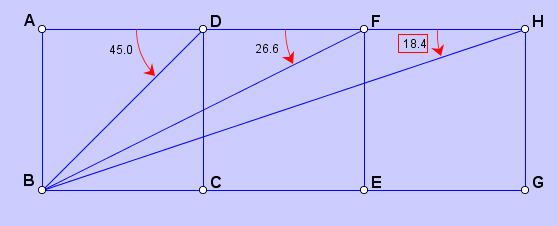

JGEX is first a Dynamic Geometry Software (DGS). The drawing part of JGEX allows the user to construct the diagram interactively and manipulate the diagram in a dynamic way. Starting from free points, the user can create elements which is dependent on existed elements. With the mouse, the user can place points, draw lines, introduce marks, etc. In this way, the diagram is constructed step by step. Much more important is the fact that the user can explore the dynamic nature of the diagram. The user can drag part of the diagram with mouse and see immediately how the diagram changes accordingly.
In this part we will give a brief explaination on the drawing part of JGEX. The user may know how to use JGEX to draw some simple diagram.
The input methods of JGEX are the further enhancement of the input methods used by GEX. It is similar to that used in the Geometers’ Sketchpad but emphasizes on its ease of use by the user. This method allows the user (not asked by the program) to use the mouse to choose points in the diagram pane to draw a geometry diagram. After the diagram is drawn, the text of the hypotheses is generated automatically in the text pane and it can be saved in plain-text as in the text-based format or saved in JGEX own format with a file with the “.gex” as the extension. Then the user can try to prove an assertion on the diagram.
JGEX provides some features to speedup or to facilitate
the drawing process for users. For example, if a square is wanted, the user needs only to choose
the command for drawing square, then click any two points (free points, semi-free points, or two
already constructed points) or an existing segment to drag to have a square. This process can be
cascaded so the it is effortless to draw three congruent squares in a row and to specify the following
problem that ∠BDA + ∠BFA + ∠BHA = 90◦.
 |
In the above example, the only additional adjustment or modification we did manually is to move label B to left so that it does not overlap with three lines. The whole process took us about 30 seconds. The angle marks are easy to use. The user only needs to click the two sides of the angle, then the default style is shown with angle measures in degrees. We can change the default style to many other styles. This is another notoriously hard problem with triangle congruence only.
The diagram in JGEX is drawing in the constructive way. Although JGEX do provides some constraints for user to do in non-constructive way, it's better to do it in constructive way. For the diagram in the constructive way, the proving ability of JGEX can be used.
To do the drawing in the constructive way, the user just choose the action from the toolbar or the "Construct" menu.
As a DGS, when when we have finished the drawing, we can drag some elements( free points or semi-free points) to change the diagram. In this way we can get the diagram we want. Also, JGEX provides some facility for the users to change the property of elements.
1. The Preference Dialog. The preference dialog is for setting the preference for the whole diagram. For, example, the default font for the text, the background color for the draw pane, etc.
2. Right Click Menu. With Right Click Menu, the user can change the basic property of some elements.
3. The Property Dialog. The Property Dialog is for setting all the properties of an elements.
See Also:
JGEX Help